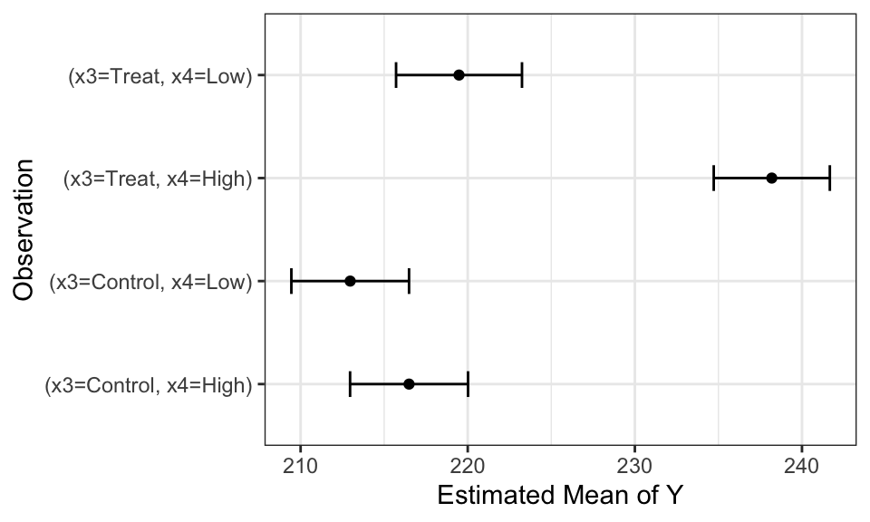
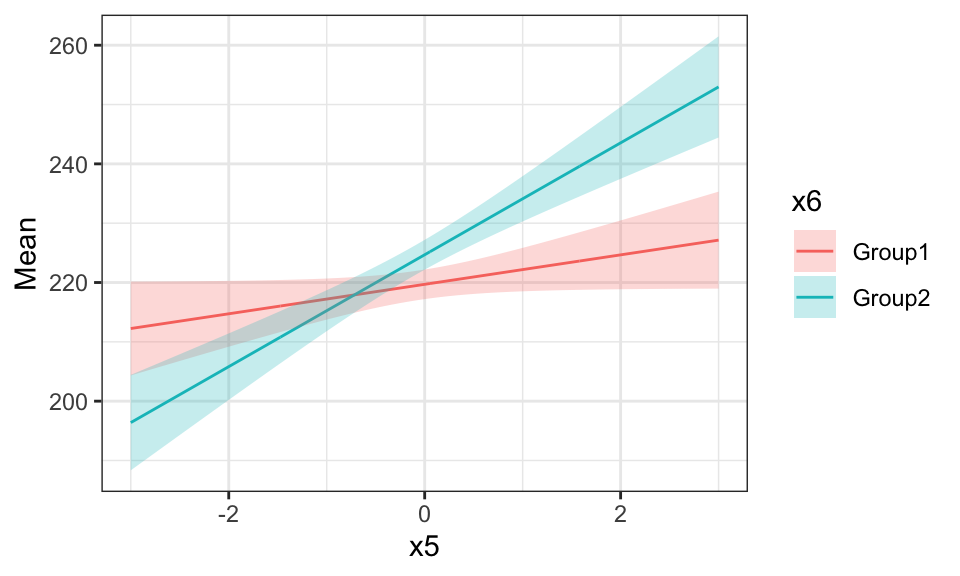
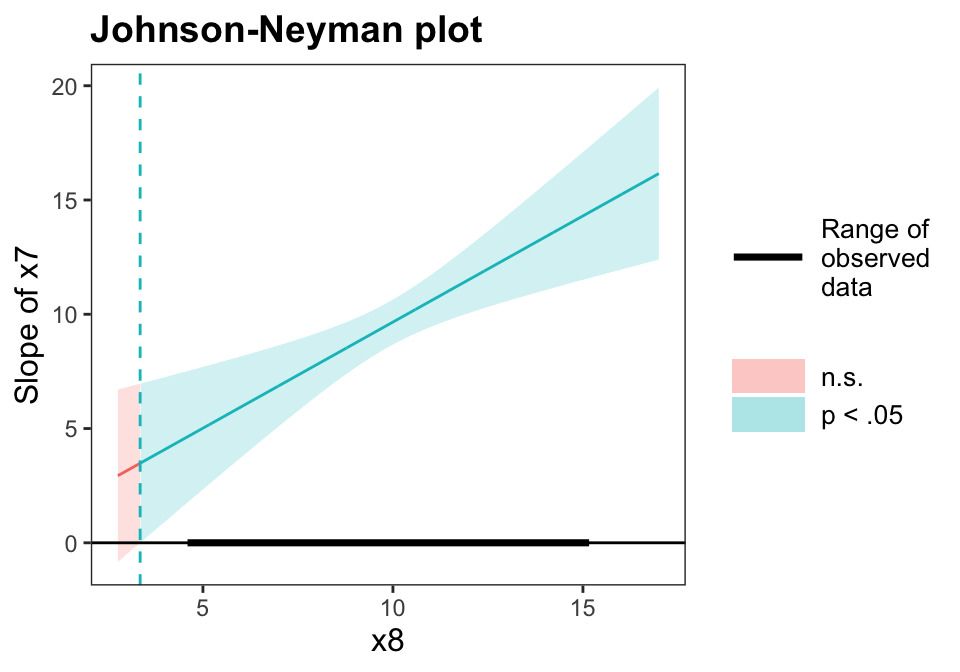
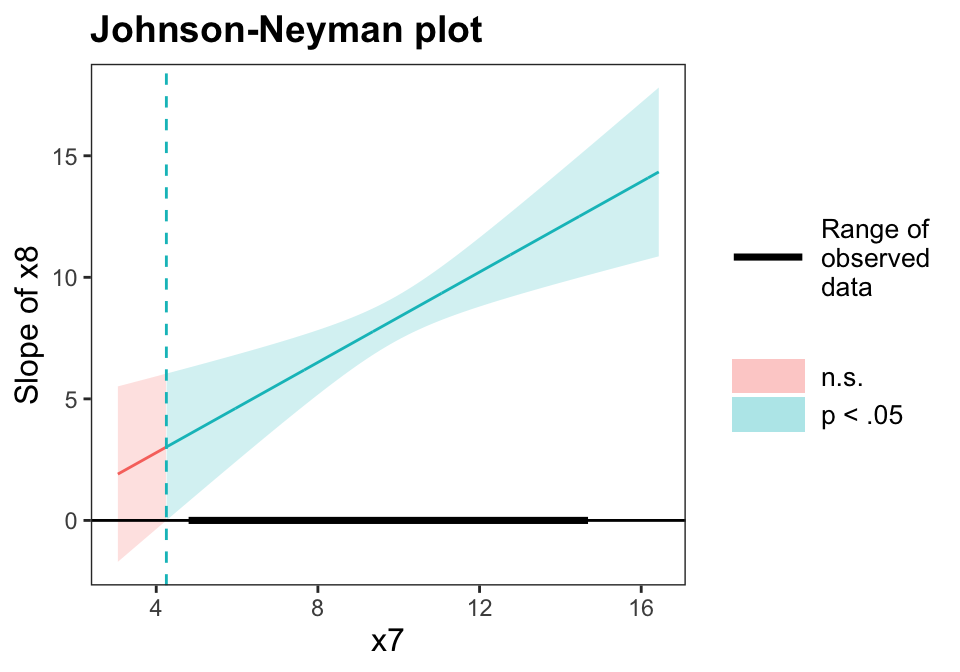
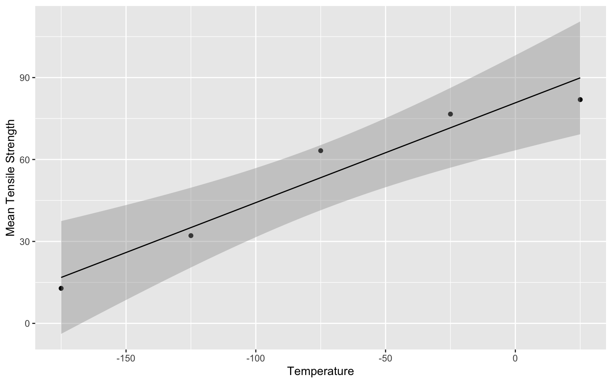
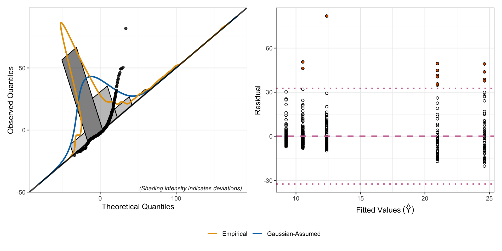
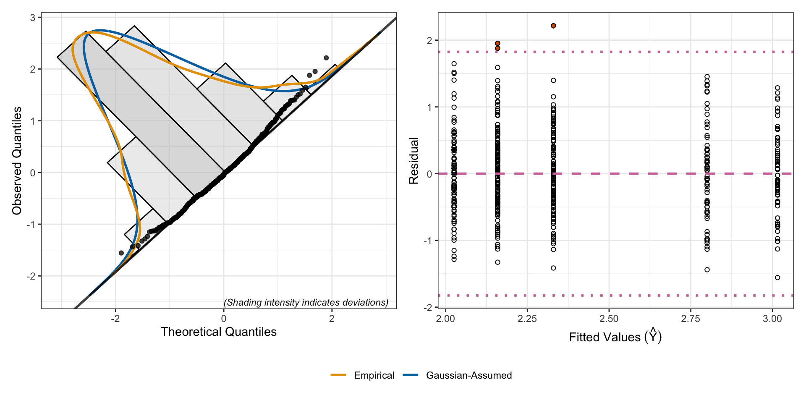

Figure 1 shows that the distribution of residuals is roughly bell-shaped and the points fit on the line in the qq plot. Therefore, the residuals are normal. The histogram centers at 0, meaning the residuals have a mean of 0. From the scatterplot, we see the residuals spreading equally around 0, suggesting common variance.
In Figure 2, we can see that the dataset has several observations that have high leverage. All \(D_i\) are below 0.50, so we know that these observations are not strongly influential.
The scatterplot for the studentized residual and the DFFITs reveal some outliers. Based on the studentized residual plot, the residuals for 9 observations fall more than 2 SDs above or below 0. Regarding the DFFITs plot, our model has 10 predictors, so we compare the absolute value of DFFITs to \(2*\sqrt{10/250}=0.4\) and \(3*\sqrt{10/250}=0.6\). An observation between the 100th and the 125th observation is strongly influential, consistent with the results from studentized residuals calclation. This observation doesn’t seem to have high leverage, however, explaining why it doesn’t stick out in the plot—Cook’s Distance takes into consideration both leverage and influence, while DFFITs only looks at influence.
Overall, the data satisfies the conditions for use of regression regarding residual and outliers.
Interpret the intercept, the coefficients on \(x_1\) and \(x_2\).
Solution:
Given the predictors are standardized,
\(\beta_0\) is the expected value of Y when every predictor is at their average (reference value).
\(\beta_1\) is the expected increase in the value of Y with every 1 unit increase in \(x_1\), given all other predictors are fixed.
\(\beta_1\) is the expected increase in the value of Y when the reference category for \(x_2\) changes from A to B, given all other predictors are fixed.
1.4 Part d
Untangle and interpret the \(x_3*x_4\) interaction using algebra. Use Table 1 and Figure 3 for context.
Solution:
We hold all parts that do not involve \(x_3\) and \(x_4\) in the model constant, labeled as \(C\). Our regression model becomes: \[Y_i = \beta_3 I(x_{3i}=\text{Treat}) + \beta_4 I(x_{4i}=\text{High}) + \beta_9 (I(x_{3i}=\text{Treat}) ~\times~ I(x_{4i}=\text{High})) + C \] Our expected Y, conditioned on \(x_3\) and \(x_4\), are as follow: \[ E(Y_i | x_{3i}=\text{Control}, x_{4i}=\text{Low}) = C \]\[ E(Y_i | x_{3i}=\text{Control}, x_{4i}=\text{High}) = \beta_4 + C \]\[ E(Y_i | x_{3i}=\text{Treat}, x_{4i}=\text{Low}) = \beta_3 + C \]\[ E(Y_i | x_{3i}=\text{Treat}, x_{4i}=\text{High}) = \beta_3 + \beta_4 + \beta_9 + C \]
\(C\) is the expected value of \(Y\) in the Control group when condition is Low.
\(\beta_3\) is the expected difference \(Y\) between the Control and Treatment group when the condition is Low. In other words, in the Low condition, \(\beta_3\) is the expected increase in \(Y\) when the reference category changes from Control to Treatment.
\(\beta_4\) is the expected difference \(Y\) between the Low and High condition in the Control group.
\(\beta_4\) is the interaction effect of Group (Treatment vs. Control) and Condition (High vs. Low). When group changes from Control to Treatment and condition changes from Low to High, the expeced value of \(Y\) gets by both the effect of each categorical variable and the interaction effect.
Code
library(emmeans)emm.q1d <-emmeans(mod.q1, ~x3*x4) |># Don't average across levels: use |x2*x6data.frame() |>rename("Mean"="emmean","Lower"="lower.CL","Upper"="upper.CL")
Table 1: Estimated marginal means for the model in Question 1.
x3
x4
Mean
SE
df
Lower
Upper
Control
Low
212.9676
1.7871
238
209.4470
216.4882
Treat
Low
219.4792
1.9123
238
215.7120
223.2464
Control
High
216.4894
1.7916
238
212.9601
220.0188
Treat
High
238.1930
1.7631
238
234.7198
241.6662
Code
emm.q1d <- emm.q1d |>mutate(Observation =paste("(x3=", x3, ", ", "x4=", x4, ")", sep=""))ggplot(emm.q1d) +geom_point(aes(x=Mean, y=Observation))+geom_errorbar(aes(y=Observation,xmin=Lower, xmax=Upper),width =0.25)+# facet_wrap(~x2*x6)+theme_bw()+xlab("Estimated Mean of Y")
Figure 3: Estimated marginal means for the model in Question 1.

1.5 Part e
Untangle and interpret the \(x_5*x_6\) interaction using algebra. Use Table 2 and Figure 4 for context.
Solution:
We hold all parts that do not involve \(x_5\) and \(x_6\) in the model constant, labeled as \(C\). Our regression model becomes: \[Y_i = \beta_5 x_{5i} + \beta_6 I( x_{6i}=\text{Group2}) + \beta_{10} (x_{5i} ~\times~ I(x_{6i}=\text{Group2})) + C \] Our expected Y, conditioned on \(x_5\) and \(x_6\), are as follow:
Group 1: \[Y_i = \beta_5 x_{5i} + C \]
\(C\) is the expected value of \(Y\) when \(x_5=0\).
\(\beta_5\) is the increase in the expected value of \(Y\) when \(x_5\) increases by 1 unit.
Group 2: \[Y_i = (\beta_5 + \beta_{10})x_{5i} + (\beta_6 + C) \]
\(\beta_6 + C\) is the expected value of \(Y\) when \(x_5=0\).
\(\beta_5 + \beta_10\) is the increase in the expected value of \(Y\) when \(x_5\) increases by 1 unit.
Table 2: Estimated marginal trends for the model in Question 1.
x6
Slope
SE
df
Lower
Upper
Group1
2.4835
1.2942
238
-0.0660
5.0330
Group2
9.4309
1.3367
238
6.7977
12.0642
Code
emm.q1e <-emmeans(mod.q1, ~x5*x6,at =list(x5 =seq(-3, 3, length.out=500))) |># Don't average across levels: use |x2*x3*x4data.frame() |>rename("Mean"="emmean","Lower"="lower.CL","Upper"="upper.CL")ggplot(emm.q1e) +geom_line(aes(x=x5, y=Mean, color=x6))+geom_ribbon(aes(x=x5, ymin=Lower, ymax=Upper, fill=x6), alpha=0.25)+# facet_wrap(~x2*x3*x4)+theme_bw()
Figure 4: Estimated marginal trends for the model in Question 1.

1.6 Part f
Untangle and interpret the \(x_7*x_8\) interaction using algebra. Use Table 3 and Table 4 for context.
Solution:
We hold all parts that do not involve \(x_7\) and \(x_8\) in the model constant, labeled as \(C\). Our regression model becomes: \[Y_i = \beta_7 x_{7i} + \beta_8 x_{8i} + \beta_{11} (x_{7i} ~\times~ x_{8i}) + C \] We can combine like terms to get:
\(\beta_7 + \beta_{11}x_{8i}\) is the change in \(Y\) for a unit change in \(x_7\) after adjusting for the simultaneous linear change in \(x_8\).
\(\beta_8 + \beta_{11}x_{7i}\) is the change in \(Y\) for a unit change in \(x_8\) after adjusting for the simultaneous linear change in \(x_7\).
\(\beta_{11}\) is the change in the slope of \(x_7\) when \(x_8\) increases by 1 unit, and is also the change in the slope of \(x_8\) when \(x_7\) increases by 1 unit. From the tables, we can see that increases in \(x_8\) is associated with increases in the slope of \(x_7\), and vice versa.
When \(x_8=0\), \(\beta_7\) is the change in the expected value of \(Y\) when \(x_7\) increases by 1 unit.
When \(x_7=0\), \(\beta_8\) is the change in the expected value of \(Y\) when \(x_8\) increases by 1 unit.
Code
emm.q1f.x7 <-emtrends(mod.q1, var="x7", ~x7|x8, at =list(x8 =mean(dat.q1$x8) +c(-1, 0 ,1)*sd(dat.q1$x8))) |>data.frame() |>rename("Slope"="x7.trend","Lower"="lower.CL","Upper"="upper.CL") |> dplyr::select(x8, Slope, SE, df, Lower, Upper)
Table 3: Estimated marginal trends for the model in Question 1.
x8
Slope
SE
df
Lower
Upper
8.1309
7.9230
0.6751
238
6.5932
9.2529
10.0582
9.7129
0.5015
238
8.7250
10.7008
11.9854
11.5027
0.7396
238
10.0458
12.9597
Code
emm.q1f.x8 <-emtrends(mod.q1, var="x8", ~x8|x7, at =list(x7 =mean(dat.q1$x7) +c(-1, 0 ,1)*sd(dat.q1$x7))) |>data.frame() |>rename("Slope"="x8.trend","Lower"="lower.CL","Upper"="upper.CL") |> dplyr::select(x7, Slope, SE, df, Lower, Upper)
Table 4: Estimated marginal trends for the model in Question 1.
x7
Slope
SE
df
Lower
Upper
8.3824
6.8569
0.6069
238
5.6613
8.0525
10.2208
8.5643
0.4744
238
7.6297
9.4989
12.0592
10.2716
0.7325
238
8.8286
11.7146
A Johnson Neyman analysis using the interactions package for R(Long 2024), shows that the slope of \(x_7\) is statistically discernible for all observed values of \(x_8\) (Figure 6), and vice versa (Figure 5).
Code
library(interactions)johnson_neyman(mod.q1, pred = x7, modx = x8, control.fdr = T)
JOHNSON-NEYMAN INTERVAL
When x8 is OUTSIDE the interval [-13.08, 3.35], the slope of x7 is p < .05.
Note: The range of observed values of x8 is [4.69, 15.07]
Interval calculated using false discovery rate adjusted t = 1.97
Figure 5: Johnson Neyman interval for the model in Question 1.

Code
johnson_neyman(mod.q1, pred = x8, modx = x7, control.fdr = T)
JOHNSON-NEYMAN INTERVAL
When x7 is OUTSIDE the interval [-9.96, 4.25], the slope of x8 is p < .05.
Note: The range of observed values of x7 is [4.89, 14.60]
Interval calculated using false discovery rate adjusted t = 1.97
Figure 6: Johnson Neyman interval for the model in Question 1.

1.7 Part g
Standardize the continuous data and refit the regression model. Redo part f. What do you notice about the coefficient estimates and why does this make the untangling process easier?
Solution: First, we fit the regression model using lm().
Table 6: Estimated marginal trends for the model in Question 1 when quantitative variables are standardized.
x7
Slope
SE
df
Lower
Upper
-1
13.22
1.17
238
10.91
15.52
0
16.51
0.91
238
14.70
18.31
1
19.80
1.41
238
17.01
22.58
After transformation,
\(\beta_7\) is the effect of a 1-SD change in \(x_7\) when \(x_8\) is at its mean.
\(\beta_7\) is the effect of a 1-SD change in \(x_7\) when \(x_8\) is at its mean.
\(\beta_{11}\) now becomes the change in the slope of 1 standardized predictor when the other predictor shifts by 1 standard deviation. For example, looking at the effect of \(x_7\):
When \(z_8=-1\), \[Y_i = (\beta_7 - \beta_{11})z_{7i} - \beta_8 + C \] In other words, when \(x_8\) is 1 SD below the means, for every increase in the SD of \(x_7\), the expected value of \(Y\) increases by \(\beta_7 - \beta_{11}\). When \(x_7\) is at average, the expected value of \(Y\) is \(C - \beta_8\). This transformation makes the untangling process easier. In Table 5, in the slope column, the second row is the estimated value for \(\beta_7 - \beta_{11}\), the third row is the estimated value for \(\beta_7 + \beta_{11}\), and the difference between rows is the estimated value for \(\beta_{11}\).
2 Question 2
Cui and Mao (2025) investigate how freezing and cryogenic temperatures affect the strength, flexibility, stiffness, and internal breaking behavior of 3D-printed CF/PEEK composites.
Carbon fiber reinforced PEEK (CF/PEEK) is a high-performance composite used in 3D printing for aerospace, deep-sea, polar research. The researchers aimed to assess whether and how extremely cold environments impact this composite to understand how 3D-printed CF/PEEK performs in freezing conditions. This work would be important to understand its limits and develop preventative methods to protect against structural failures.
The researchers created fifteen 3D printed dog-bone-shaped test specimens and placed them in a chamber cooled with liquid nitrogen to \(25^\circ\text{C}\), \(-25^\circ\text{C}\), \(-75^\circ\text{C}\), \(-125^\circ\text{C}\), and \(-175^\circ\text{C}\). To test strength of the specimen, a machine pulled both ends of the specimen until it snapped.
In the table below, the researchers record the average tensile strength for three specimens from each temperature level.
Temperature
Mean Tensile Strength
\(25^\circ\text{C}\)
81.93 MPa
\(-25^\circ\text{C}\)
76.63 MPa
\(-75^\circ\text{C}\)
63.23 MPa
\(-125^\circ\text{C}\)
32.13 MPa
\(-175^\circ\text{C}\)
12.83 MPa
2.1 Part a
Compute the estimates we derived using calculus in lecture 16: \[\begin{align*}
\widehat{\beta}_0 &= \bar{y} - \widehat{\beta}_1 \bar{x}_1 \\
\widehat{\beta}_1 &= \frac{\sum_{i=1}^n (x_{1i} - \bar{x}_1)(y_i-\bar{y})}{\sum_{i=1}^n (x_{1i}-\bar{x}_1)^2}.
\end{align*}\]
# input dataframe into function(b1 =func(df$x1, df$y1))
[1] 0.3654
Code
# calculate b0(b0 =mean(df$y1) - b1 *mean(df$x1))
[1] 80.755
2.2 Part b
Compute the estimates we derived using linear algebra in lecture 16: \[\widehat{\boldsymbol{\beta}} = \left(\mathbf{X}'\mathbf{X}\right)^{-1} \mathbf{X}'\mathbf{Y}.\]Hint: Run ?matrix() in R for a quick reminder about how to create a matrix.
Compute the maximum likelihood estimates using optim() in R as described in lecture 16: \[\max_{\beta_0, \beta_1, \sigma} \mathcal{L}(\boldsymbol{\theta}=\{\beta_0, \beta_1, \sigma\}).\]Solution:
We know that \(\epsilon_i \sim Gaussian(0, \sigma)\). We want to find the parameters (intercept, slope, and standard error of residual terms) that maximize the likelihood of observing our observed residual terms.
Code
# create function (optim can only adjust 1 object, so we have to put all 3 parameters into 1 vector)neg_log =function(par, data, mle = F) { b0 = par[1] b1 = par[2] sigma = par[3] x = data$x1 y = data$y1 ll =sum(log(dnorm(y-(b0+b1*x), 0, sigma))) #point estimationifelse(mle, -ll, ll)}
Code
mle =optim(fn = neg_log,par =c(mean(df$y1), 0, sd(df$y1)), #if slope is 0, b0 = mean(y)data = df,mle=T) #passed in for the function, not optim(mle$par[1])
[1] 80.75468
Code
(mle$par[2])
[1] 0.3653821
2.4 Part d
Fit the model using lm() and plot the resulting model. Compare to the results from parts (a) through (c).
Solution:
Using lm, we obtain the following results for the intercept and the coefficient:
Code
mod.q2 =lm(y1 ~ x1, data = df)(coef(mod.q2)["(Intercept)"])
(Intercept)
80.755
Code
(coef(mod.q2)["x1"])
x1
0.3654
The results are roughly similar across from part (a) to (d).
Code
ggplot(df, aes(x = x1, y = y1)) +geom_point(aes(x = x1, y = y1)) +geom_smooth(aes(x = x1, y = y1),method ="lm", color ="black", linewidth =0.5) +labs(x ="Temperature",y ="Mean Tensile Strength")
Figure 7: Regression on Conditional Means of Y

3 Question 3
Bracht et al. (2016) evaluate MFAP4 as a biomarker for severity of fibrosis in hepatitic C patients.
Code
dat.mfap4 <-read_csv("Bracht2016.csv")
3.1 Part a
Fit the model predicting MFAP4 using Fibrosis.Stage. Write out the resulting estimate model and interpret the coefficients.
\(\beta_0 = 9.230\): the expected value of \(Y\) when the reference category is “Stage 0”
\(\beta_1 = 1.301\): the change in \(Y\) when the reference category changes from “Stage 0” to “Stage 1”
\(\beta_2 = 3.154\): the change in \(Y\) when the reference category changes from “Stage 0” to “Stage 2”
\(\beta_3 = 11.742\): the change in \(Y\) when the reference category changes from “Stage 0” to “Stage 3”
\(\beta_4 = 15.388\): the change in \(Y\) when the reference category changes from “Stage 0” to “Stage 4”
Code
# transform datasetdat = dat.mfap4 |>select(Fibrosis.Stage, MFAP4) # fit modelmod.q3.1=lm(MFAP4 ~ Fibrosis.Stage, data = dat)
3.2 Part b
Conduct a residual analysis on the model in part a to demonstrate how to identify when you need a log transformation.
Solution:
From Figure 8, we can see that the residual terms are not normal, and a good amount of them are way oft the qq line. The variance follows a megaphone shape. For the last two fitted values, the residuals are much more spread out.
Code
plotResiduals(mod.q3.1)
Figure 8: Residual Analysis

3.3 Part c
Fit the model predicting log(MFAP4) using Fibrosis.Stage. Use the natural log, and not the \(\log_2(\cdot)\) recorded in the data file. Write out the resulting estimate model and interpret the coefficients.
Solution:\[\hat{y}_i = 2.026 + 0.133 \times I(x_{1i} = \text{``Stage 1''}) + 0.304 \times I(x_{1i} = \text{``Stage 2''}) + 0.774 \times I(x_{1i} = \text{``Stage 3''}) + 0.990 \times I(x_{1i} = \text{``Stage 4''})\] * \(\beta_0 = 2.026\): the expected value of \(Y\) when the reference category is “Stage 0”
\(\beta_1 = 0.133\): the change in \(Y\) when the reference category changes from “Stage 0” to “Stage 1”
\(\beta_2 = 0.304\): the change in \(Y\) when the reference category changes from “Stage 0” to “Stage 2”
\(\beta_3 = 0.774\): the change in \(Y\) when the reference category changes from “Stage 0” to “Stage 3”
\(\beta_4 = 0.990\): the change in \(Y\) when the reference category changes from “Stage 0” to “Stage 4”
Code
dat = dat |>mutate(Log_MFAP4 =log(MFAP4)) |>select(Fibrosis.Stage, Log_MFAP4)
Code
mod.q3 =lm(Log_MFAP4 ~ Fibrosis.Stage, data = dat)
3.4 Part d
Conduct a residual analysis on the model in part c to demonstrate that the conditions for using regression are met.
Solution:
The log transformation makes the outliers less extreme. The conditions for using regression are met: the residuals follow a Gaussian distribution, and the variance is roughly the same across the five fitted values.
Code
plotResiduals(mod.q3)
Figure 9: Residual Analysis

3.5 Part e
Fit the model predicting log(MFAP4) using Fibrosis.Stage, Age, and Gender. Use the natural log, and not the \(\log_2(\cdot)\) recorded in the data file. Write out the resulting estimate model and interpret the coefficients.
Simulate data to match regression assumptions in a loop that runs \(R=1000\) times. \[\begin{align*}
x_i &\sim \text{Uniform}(a=0,b=10)\\
\epsilon_i &\sim \text{Gaussian}(\mu=0, \sigma=1)\\
y_i &= 2 + 1.5 x_i + \epsilon_i\\
n &= 30
\end{align*}\] In each iteration, fit a regression line to the data and store the coefficient estimates. Plot the resulting estimates. What do you notice?
Solution:
When the distribution of the residual terms are normal and has a mean of 0, the estimates of the intercept (\(\beta_0\)) and the slope (\(\beta_1\)) follow a Gaussian distribution, centering around the specified intercept and slope.
Code
set.seed(8279)estimate_a =tibble(b0 =rep(NA, 1000),b1 =rep(NA, 1000))for(i in1:1000) { x =runif(30, 0, 10) epsilon =rnorm(30, 0, 1) y =2+1.5*x + epsilon mod =lm(y ~ x) estimate_a$b0[i] =coef(mod)["(Intercept)"] estimate_a$b1[i] =coef(mod)["x"]}
Simulate data to match regression assumptions in a loop that runs \(R=1000\) times. \[\begin{align*}
x_i &\sim \text{Uniform}(a=0,b=10)\\
\epsilon_i &\sim \text{Shifted Exponential}(\lambda=1, \mu=0)\\
y_i &= 2 + 1.5 x_i + \epsilon_i\\
n &= 30
\end{align*}\] In each iteration, fit a regression line to the data and store the coefficient estimates. Plot the resulting estimates. What do you notice?
Hint: Use the tolerance::r2exp() function with rate=1 and shift=-1.
Solution:
When the distribution of the residual terms is not normal but still centers around 0, the \(\beta_0\) estimate follows a right-skewed normal distribution, and \(\beta_1\) estimate follows a Gaussian distribution.
Simulate data to match regression assumptions in a loop that runs \(R=1000\) times. \[\begin{align*}
x_i &\sim \text{Uniform}(a=0,b=10)\\
\epsilon_i &\sim \text{Cauchy}(m=0, s=1)\\
y_i &= 2 + 1.5 x_i + \epsilon_i\\
n &= 30
\end{align*}\] In each iteration, fit a regression line to the data and store the coefficient estimates. Plot the resulting estimates. What do you notice?
Solution:
When the residual terms are drawn from a Cauchy distribution, which has no finite mean or variance and has long tails, they’re more likely to be extreme values.
Looking at the medians, \(\beta_0\) estimate still clusters around 2 and \(\beta_1\) estimate clusters around 1.5.Looking at Figure 14 and Figure 15, we see some astronomical outliers (below \(-20000\) or above \(8000\)). The lack of constant variance of the Cauchy distribution causes the estimate to be extremely low in precision.
Code
set.seed(8279)estimate_c =tibble(b0 =rep(NA, 1000),b1 =rep(NA, 1000))for(i in1:1000) { x =runif(30, 0, 10) epsilon =rcauchy(30, 0, 1) y =2+1.5*x + epsilon mod =lm(y ~ x) estimate_c$b0[i] =coef(mod)["(Intercept)"] estimate_c$b1[i] =coef(mod)["x"]}
Bracht, Thilo, Christian Mölleken, Maike Ahrens, et al. 2016. “Evaluation of the Biomarker Candidate MFAP4 for Non-Invasive Assessment of Hepatic Fibrosis in Hepatitis C Patients.”Journal of Translational Medicine 14 (1): 201.
Cui, Mengyang, and Jian Mao. 2025. “Effect of Low Temperature on Mechanical Properties and Fracture Behavior of 3D Printed Short Carbon Fiber Reinforced Polyether Ether Ketone Composites (CF/PEEK).”Scientific Reports 15 (1): 36244.